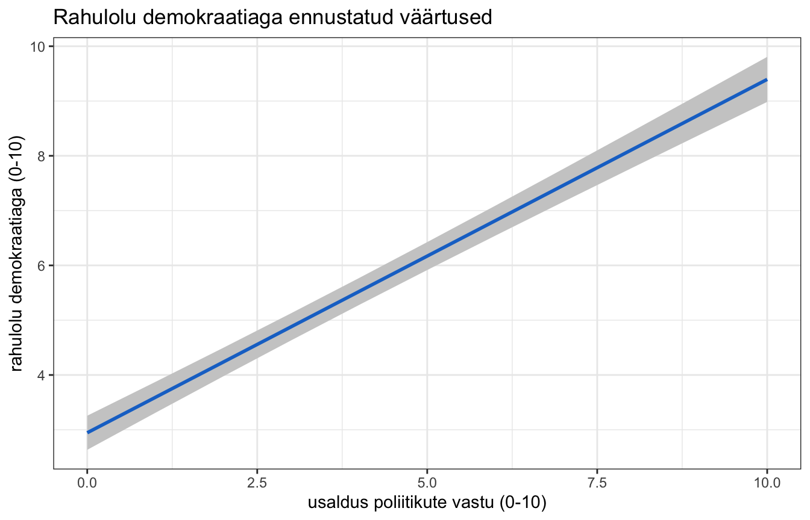
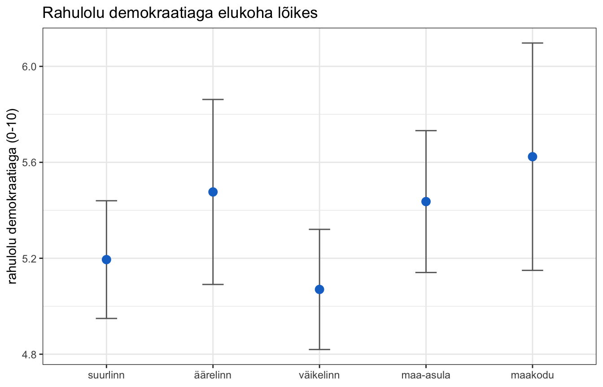

library(dplyr)
library(ggplot2)
library(modelsummary)
library(ggeffects)
load("data/ess11_ee_clean.rdata")10. Tulemuste esitamine
Mudel on tehtud. Nüüd tuleb ta esitada nii, et keegi teine saaks aru.
summary() väljund konsoolis on sinu jaoks, mitte lugeja jaoks. Ta on täis tehnilist infot, muutujate nimed on koodis ja midagi ei ole vormistatud. Tööl on vaja kahte asja: tabelit ja joonist.
Teeme kõigepealt paar mudelit, mida esitada.
m1 <- lm(rahulolu_dem ~ usaldus_pol, data = data)
m2 <- lm(rahulolu_dem ~ usaldus_pol + vanus + haridus, data = data)
m3 <- lm(
rahulolu_dem ~ usaldus_pol + vanus + haridus + sugu + elukoht,
data = data
)Tabelid
Tabeli tegemiseks kasutame paketti modelsummary. Ta on tänapäeval kõige mugavam lahendus: oskab peaaegu kõiki mudelitüüpe ja kirjutab tulemuse otse sellisesse formaati, mida vaja.
Kõige lihtsam kasutus: anna funktsioonile modelsummary() mudel ja ta teeb tabeli.
modelsummary(m2)| (1) | |
|---|---|
| (Intercept) | 2.847 |
| (0.244) | |
| usaldus_pol | 0.645 |
| (0.026) | |
| vanus | -0.011 |
| (0.004) | |
| haridus | 0.118 |
| (0.038) | |
| Num.Obs. | 1212 |
| R2 | 0.363 |
| R2 Adj. | 0.362 |
| AIC | 5224.6 |
| BIC | 5250.1 |
| Log.Lik. | -2607.309 |
| RMSE | 2.08 |
Juba päris korralik, aga veel mitte esitatav. Muutujate nimed on koodinimed ja statistikat on rohkem, kui vaja.
Varasemates materjalides kasutati paketti
stargazer. Ta töötab endiselt, kuid teda ei arendata enam ning ta ei oska uuemate mudelitüüpidega hakkama saada. Kui sa kohtad vanemas koodisstargazer(), siis tea, mis see on — ise kasutamodelsummary().
Tabeli korrastamine
Kolm argumenti, millega saab peaaegu kõik ära teha.
coef_map— nimede muutmine. Anna talle nimekiri kujul"koodinimi" = "ilus nimi". Muutujad, mida siin ei ole, jäetakse tabelist välja, ja järjekord tuleb selline, nagu siin kirjas.gof_map— millist mudeli sobivuse statistikat näidata.stars— tärnid statistilise olulisuse tähistamiseks.
nimed <- c(
"usaldus_pol" = "Usaldus poliitikute vastu (0-10)",
"vanus" = "Vanus (aastates)",
"haridus" = "Haridustase (1-7)",
"sugunaine" = "Sugu: naine (ref. mees)",
"(Intercept)" = "Vabaliige"
)
modelsummary(
m2,
coef_map = nimed,
gof_map = c("nobs", "adj.r.squared"),
stars = c("*" = 0.05, "**" = 0.01, "***" = 0.001)
)| (1) | |
|---|---|
| * p < 0.05, ** p < 0.01, *** p < 0.001 | |
| Usaldus poliitikute vastu (0-10) | 0.645*** |
| (0.026) | |
| Vanus (aastates) | -0.011** |
| (0.004) | |
| Haridustase (1-7) | 0.118** |
| (0.038) | |
| Vabaliige | 2.847*** |
| (0.244) | |
| Num.Obs. | 1212 |
| R2 Adj. | 0.362 |
Tärnide piirid. Vaikimisi kasutab
modelsummaryka piiri 0,1, mida praktikas keegi ei kasuta. Määra nad ise, nagu ülal.
Mitu mudelit kõrvuti
See on regressioonitabeli kõige kasulikum omadus. Kui panna mitu mudelit kõrvuti, näeb lugeja kuidas koefitsiendid muutuvad, kui mudelisse muutujaid juurde tuleb.
Selleks anna modelsummary()-le nimekiri mudelitest. Nimekirja elementide nimed saavad tabelis veergude pealkirjadeks.
nimed_koik <- c(
"usaldus_pol" = "Usaldus poliitikute vastu (0-10)",
"vanus" = "Vanus (aastates)",
"haridus" = "Haridustase (1-7)",
"sugunaine" = "Sugu: naine (ref. mees)",
"elukohtsuurlinna äärelinn" = "Elukoht: äärelinn (ref. suurlinn)",
"elukohtväiksem linn" = "Elukoht: väiksem linn (ref. suurlinn)",
"elukohtmaa-asula" = "Elukoht: maa-asula (ref. suurlinn)",
"elukohttalu või maakodu" = "Elukoht: talu (ref. suurlinn)",
"(Intercept)" = "Vabaliige"
)
modelsummary(
list("Mudel 1" = m1, "Mudel 2" = m2, "Mudel 3" = m3),
coef_map = nimed_koik,
gof_map = c("nobs", "adj.r.squared"),
stars = c("*" = 0.05, "**" = 0.01, "***" = 0.001),
title = "Rahulolu demokraatiaga seletavad tegurid"
)| Mudel 1 | Mudel 2 | Mudel 3 | |
|---|---|---|---|
| * p < 0.05, ** p < 0.01, *** p < 0.001 | |||
| Usaldus poliitikute vastu (0-10) | 0.670*** | 0.645*** | 0.645*** |
| (0.026) | (0.026) | (0.027) | |
| Vanus (aastates) | -0.011** | -0.011** | |
| (0.004) | (0.004) | ||
| Haridustase (1-7) | 0.118** | 0.137*** | |
| (0.038) | (0.040) | ||
| Sugu: naine (ref. mees) | -0.239 | ||
| (0.122) | |||
| Elukoht: maa-asula (ref. suurlinn) | 0.242 | ||
| (0.173) | |||
| Vabaliige | 2.788*** | 2.847*** | 2.820*** |
| (0.108) | (0.244) | (0.266) | |
| Num.Obs. | 1218 | 1212 | 1211 |
| R2 Adj. | 0.355 | 0.362 | 0.366 |
Nüüd on näha, et usalduse koefitsient jääb kõigis kolmes mudelis praktiliselt samaks. See on hea märk — seos on robustne, ta ei kao ära, kui teisi muutujaid juurde panna.
Nii esitatakse regressiooni tulemused korralikus teadustöös. Mitte üks mudel, vaid mitu, kõige lihtsamast kõige täielikumani. Lugeja näeb, kust koefitsiendid tulevad ja kui tundlikud nad mudeli koosseisu suhtes on.
Pane tähele ka rida
Num.Obs.— juhtumite arv väheneb, kui mudelisse muutujaid juurde tuleb, sest iga muutuja toob kaasa oma puuduvad väärtused.
Tabeli eksportimine Wordi
Ja nüüd kõige praktilisem osa. Argument output ütleb, millisesse faili tabel salvestada. Laiendi järgi otsustab modelsummary ise, mis formaadis.
modelsummary(
list("Mudel 1" = m1, "Mudel 2" = m2, "Mudel 3" = m3),
coef_map = nimed_koik,
gof_map = c("nobs", "adj.r.squared"),
stars = c("*" = 0.05, "**" = 0.01, "***" = 0.001),
title = "Rahulolu demokraatiaga seletavad tegurid",
output = "tabel1.docx"
)Fail tekib sinu projekti kausta ja teda saab Wordis avada ning edasi kujundada.
Sama moodi saab teha ka teisi formaate:
output |
Tulemus |
|---|---|
"tabel.docx" |
Wordi dokument |
"tabel.html" |
veebileht |
"tabel.tex" |
LaTeX |
"tabel.md" |
Markdown |
Pane tähele: vaata tabel enne esitamist üle. Kontrolli, et nimed on õiged, et komakohti on mõistlik arv ja et referentskategooriad on välja toodud.
Joonised
Tabel näitab arve. Joonis näitab, mida need arvud tähendavad.
Kõige kasulikum joonisetüüp on ennustatud väärtuste joonis: kuidas muutub sõltuva muutuja ennustatud väärtus, kui üks sõltumatu muutuja muutub ja kõik teised on konstantsed oma tüüpilistel väärtustel.
Selleks kasutame paketti ggeffects ja funktsiooni predict_response(). Esimene argument on mudel. Argument terms ütleb, millise muutuja kohta me ennustusi tahame — kõik ülejäänud mudelis olevad muutujad hoitakse konstantsena nende tüüpilistel väärtustel.
ennustus <- predict_response(m3, terms = "usaldus_pol")
ennustus## # Predicted values of rahulolu_dem
##
## usaldus_pol | Predicted | 95% CI
## ------------------------------------
## 0 | 2.95 | 2.63, 3.26
## 1 | 3.59 | 3.31, 3.87
## 3 | 4.88 | 4.63, 5.13
## 4 | 5.53 | 5.28, 5.77
## 5 | 6.17 | 5.92, 6.42
## 6 | 6.82 | 6.54, 7.09
## 7 | 7.46 | 7.16, 7.76
## 10 | 9.40 | 8.98, 9.81
##
## Adjusted for:
## * vanus = 49.61
## * haridus = 4.91
## * sugu = mees
## * elukoht = suurlinnVäljundis on iga usalduse väärtuse kohta ennustatud rahulolu ja usaldusvahemik.
Nüüd teeme sellest joonise ise. ggeffects oskaks joonise ka ise teha, aga siis jääks nägemata, mis seal tegelikult toimub. Teeme ta tavalise ggplot-iga — nii on näha, et tegemist on lihtsalt andmetabeliga, millest joonistatakse joon ja tema ümber ala.
Kõigepealt teeme väljundist tavalise andmetabeli ja vaatame, mis veerud seal on.
ennustus_tabel <- as.data.frame(ennustus)
head(ennustus_tabel)## x predicted std.error conf.low conf.high group
## 1 0 2.945256 0.1585531 2.634184 3.256327 1
## 2 1 3.590251 0.1437352 3.308252 3.872251 1
## 3 2 4.235247 0.1326349 3.975026 4.495469 1
## 4 3 4.880243 0.1262370 4.632574 5.127912 1
## 5 4 5.525239 0.1252639 5.279479 5.770999 1
## 6 5 6.170235 0.1298378 5.915501 6.424969 1Veerud on alati samade nimedega:
| Veerg | Mis seal on |
|---|---|
x |
sõltumatu muutuja väärtus |
predicted |
ennustatud väärtus |
conf.low |
usaldusvahemiku alumine ots |
conf.high |
usaldusvahemiku ülemine ots |
Nüüd on joonise tegemine tavaline ggplot-i töö. Kaks uut kihti:
geom_line()joonistab ennustatud väärtuste joone;geom_ribbon()joonistab joone ümber ala. Argumendidyminjaymaxütlevad, kus ala alumine ja ülemine serv on.
ggplot(ennustus_tabel, aes(x = x, y = predicted)) +
geom_ribbon(aes(ymin = conf.low, ymax = conf.high), fill = "grey80") +
geom_line(linewidth = 1, color = "dodgerblue3") +
labs(
x = "usaldus poliitikute vastu (0-10)",
y = "rahulolu demokraatiaga (0-10)",
title = "Rahulolu demokraatiaga ennustatud väärtused"
) +
theme_bw()
Kihtide järjekord on oluline.
geom_ribbon()tuleb ennegeom_line(), sest ggplot joonistab kihid selles järjekorras, nagu nad kirja on pandud. Vastupidises järjekorras kataks hall ala joone ära.
Hall ala on usaldusvahemik. Ta on keskel kitsam ja servades laiem — sest andmeid on kõige rohkem keskel ja mudel on seal kõige kindlam.
Arutelu. Vaata usaldusvahemiku laiust joone eri kohtades. Mida see sulle ütleb selle kohta, kui kindel sa võid olla mudeli ennustustes skaala servades?
Kategooriline muutuja
Sama loogika, aga joone asemel punktid ja vearibad. Funktsioon geom_errorbar() joonistab püstise joone igast punktist üles-alla; argument width määrab tema otste laiuse.
ennustus_elukoht <- predict_response(m3, terms = "elukoht")
elukoht_tabel <- as.data.frame(ennustus_elukoht)
ggplot(elukoht_tabel, aes(x = x, y = predicted)) +
geom_errorbar(
aes(ymin = conf.low, ymax = conf.high),
width = 0.2,
color = "grey40"
) +
geom_point(size = 3, color = "dodgerblue3") +
labs(
x = NULL,
y = "rahulolu demokraatiaga (0-10)",
title = "Rahulolu demokraatiaga elukoha lõikes"
) +
theme_bw()
Siin on hästi näha, miks joonis on tabelist parem: usaldusvahemikud kattuvad omavahel, mis tähendab, et elukohtade vahel ei ole usaldusväärset erinevust. Tabelist oleks selle välja lugemiseks pidanud p-väärtusi ühekaupa uurima.
Harjutus. Tee samasugune joonis hariduse kohta. Kas seos on tõusev või langev? Kui lai on usaldusvahemik skaala otstes võrreldes keskosaga ja miks?
Joonise salvestamine käib nagu ikka.
ggsave("joonis1.pdf", width = 7, height = 5)Kuidas seda kirja panna
NõuanneKuidas seda kirja panna
Tabel ja tekst ei korda üksteist. Tabelis on kõik arvud; tekstis räägid sa sellest, mis on oluline.
Tekst peab tegema kolm asja:
- viitama tabelile (“tabel 1”);
- tooma välja kõige olulisema tulemuse koos sisulise tõlgendusega;
- hindama mudelit tervikuna.
Tabelis 1 on esitatud kolm mudelit rahulolu kohta demokraatiaga. Usalduse ja rahulolu vaheline seos on tugev ja püsib kõigis mudelites praktiliselt muutumatuna (β = 0,54; p < 0,001) — see viitab, et seos ei tulene demograafilistest erinevustest. Iga punkti võrra suurem usaldus poliitikute vastu vastab keskmiselt 0,54 punkti võrra suuremale rahulolule demokraatiaga. Vanus, haridus, sugu ega elukoht statistiliselt olulist seost ei näidanud. Kolmas mudel seletab 30% rahulolu varieeruvusest (kohandatud R² = 0,30; n = 1211).
Tabeli ja joonise vormistus:
- tabelil ja joonisel on number ja pealkiri;
- tabeli all on märkus, kus on kirjas, mida tärnid tähendavad ja mis on sulgudes (standardvead);
- muutujate nimed on inimkeeles, koos skaala ulatusega;
- referentskategooria on kategooriliste muutujate juures välja toodud;
- joonise telgedel on sildid, mitte muutujate koodinimed.
Harjutused
1. Tabel. Tee kolm mudelit, kus ranne on sõltuv muutuja ja sõltumatuid muutujaid tuleb järjest juurde. Pane nad modelsummary() abil ühte tabelisse, eestikeelsete nimedega.
2. Wordi. Salvesta see tabel .docx failina ja ava ta Wordis. Mida oleks veel vaja käsitsi korrastada?
3. Joonis. Tee ennustatud väärtuste joonis hariduse kohta. Ehita ta ise ggplot-iga, mitte valmisfunktsiooniga.
4. Kriitiline pilk. Otsi mõnest teadusartiklist regressioonitabel. Kas seal on olemas kõik see, mida me selles praktikumis nõudsime? Mis on puudu?